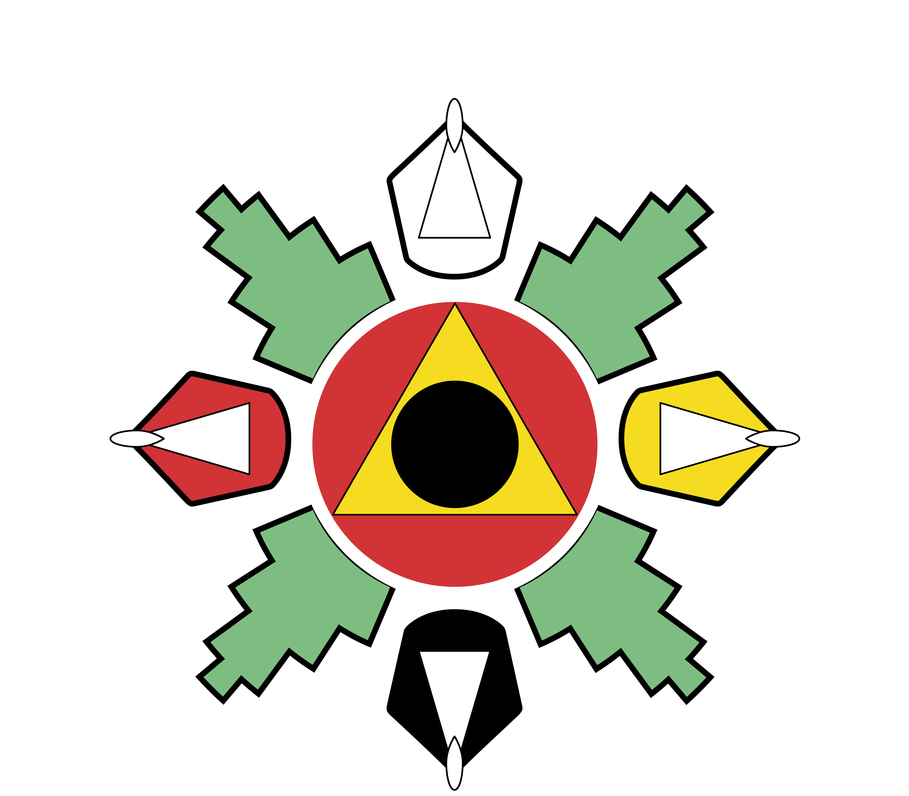

Pensando en un logo que nos representara no solo a la asamblea de autoridades zapotecas y chinantecas de la sierra norte de Oaxaca (AZACHIS) nos dimos a la tarea de buscar aquellos elementos que nos representaran a todos los zapotecos de la sierra.
1.- Las cuatro principales variedades de maíz (blanco, amarillo, negro y rojo) que se cultivan por las cuatro grandes direcciones de nuestra región y Mesoamérica; al mismo tiempo los cuatro grandes grupos humanos y su distribución geográfica en nuestro planeta (al norte los blancos, al oriente los amarillos, al sur los negros y al poniente los rojos).
2 Laga wshiu/wziw, la hoja de Cosijo (chamizo) que sirven para nuestras limpias espirituales y que tienen la forma de las montañas sagradas (no grecas no pirámides) que dan sustento a nuestra vida espiritual en la región.
3.- El circulo es nuestra región, nuestro planeta
4.- El triángulo con un agujero en el centro representando el alimento ceremonial más importante en nuestros ritos de agradecimiento y petición: el tamal triangular con un agujero en el centro (no triangulo iluminati).
1.- Las cuatro principales variedades de maíz (blanco, amarillo, negro y rojo) que se cultivan por las cuatro grandes direcciones de nuestra región y Mesoamérica; al mismo tiempo los cuatro grandes grupos humanos y su distribución geográfica en nuestro planeta (al norte los blancos, al oriente los amarillos, al sur los negros y al poniente los rojos).
2 Laga wshiu/wziw, la hoja de Cosijo (chamizo) que sirven para nuestras limpias espirituales y que tienen la forma de las montañas sagradas (no grecas no pirámides) que dan sustento a nuestra vida espiritual en la región.
3.- El circulo es nuestra región, nuestro planeta
4.- El triángulo con un agujero en el centro representando el alimento ceremonial más importante en nuestros ritos de agradecimiento y petición: el tamal triangular con un agujero en el centro (no triangulo iluminati).